Formation
rTMS
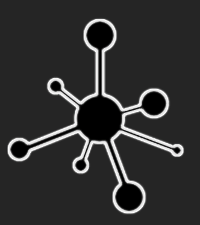
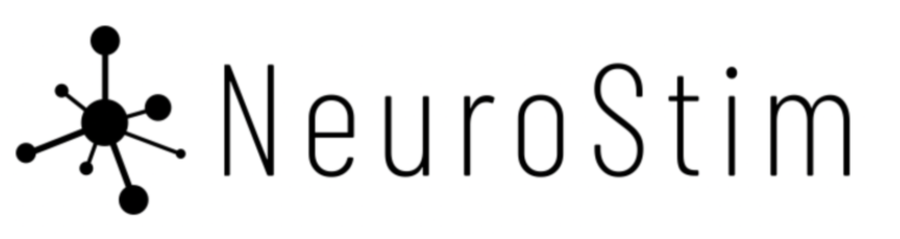
Test n°1
ÉVALUATION DES CONNAISSANCESScannez le QR code
Le questionnaire s’ouvre sur votre téléphone.
Formation
théorique
rTMS
Repetitive Transcranial Magnetic Stimulation
INTRODUCTION À LA TECHNIQUE DE rTMS
Pourquoi la rTMS ?
40%
d’efficacité des antidépresseurs en 1re ligne dans la dépression
25%
d’efficacité des antidépresseurs en 1re ligne dans le PTSD
30%
de schizophrénies résistantes, dont 30 % d’ultra-résistantes
Efficacité modérée de la pharmacothérapie dans les addictions. Etc.
Patients et médecins demandent de nouvelles voies thérapeutiques : refus des médicaments, effets indésirables des traitements, etc.
Pourquoi la rTMS ?
Dans les autres spécialités, de nombreuses questions :
Douleurs ?
Neuro-réhabilitation ?
Cognitive enhancement ?
Types de douleurs ?
Type d’AVC ?
Efficacité des traitements ?
Etc.
Objectifs et questionnements pratiques
PUBMED · rTMS · 1987‑2022
1596
publications par année, d’après PubMed
Quelques abréviations
TMS
Impulsion unique
rTMS
Impulsions répétées
DeepTMS
TMS utilisant une bobine H
iTBS
Theta Burst intermittent
cTBS
Theta Burst continu
aTMS · aiTBS
Accelerated TMS
bTMS
Bilateral TMS
mTMS
Multisite TMS
Sommaire
01
Généralités
Neurostimulation, principe physique, histoire et matériel
Neurostimulation
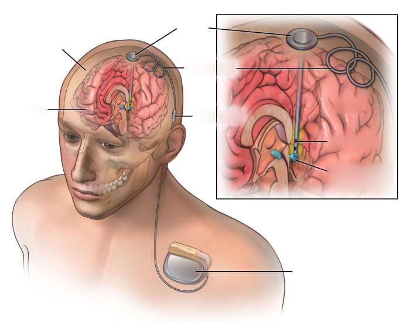
INVASIVES
DBS / VNS
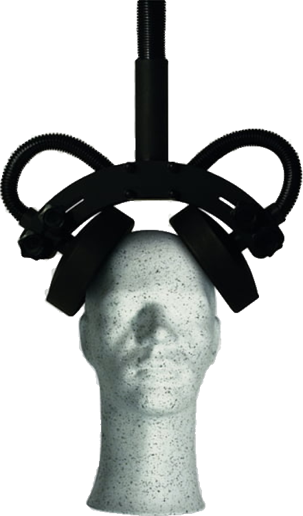
NON INVASIVES · CONVULSIVES
ECT / MST
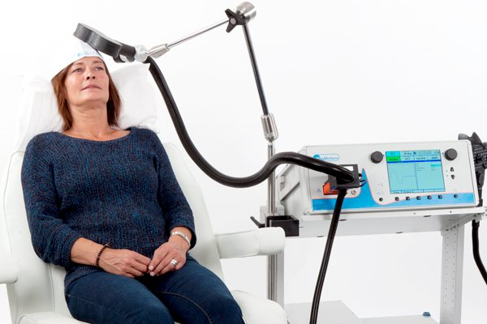
NON INVASIVES · NON CONVULSIVES
rTMS / tDCS / CES / USN / Etc.
Invasives = DBS / VNS
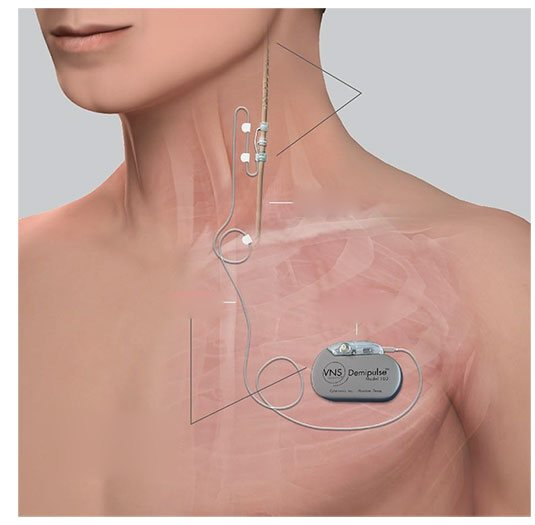
Nerf vagueÉlectrodeGénérateurL’électrode est reliée au nerf vague, qui transmet ensuite la stimulation au cerveau.
Un dispositif proche d’un stimulateur cardiaque (le générateur) envoie la stimulation par un fil souple (l’électrode).
DBS : stimulation cérébrale profonde. VNS / SNV : stimulation du nerf vague.
Traitement par SNV
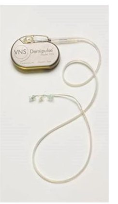
Non invasives convulsives = ECT / MST
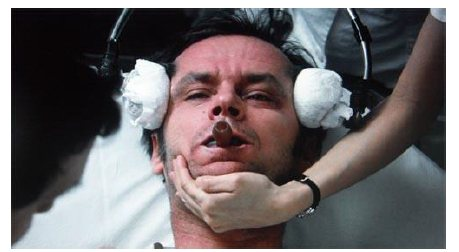
Vol au-dessus d’un nid de coucou
Roman : Ken Kesey, 1962
Film : Miloš Forman, 1975
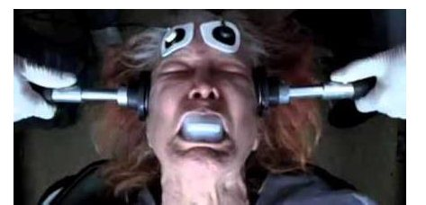
Requiem for a Dream
Roman : 1978 (Selby)
Film : 2000 (Aronofsky)
MST
Non invasives et non convulsives = rTMS / tDCS / CES / USN / Etc.
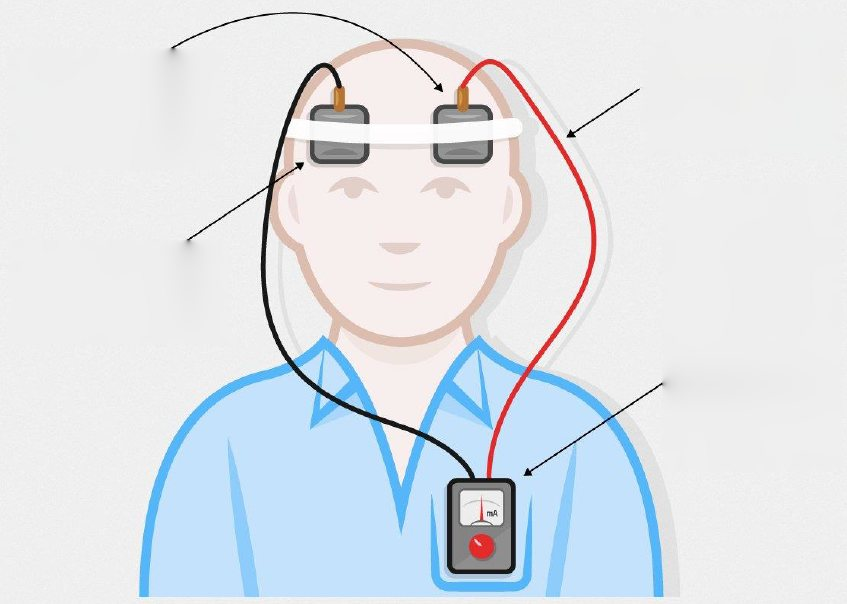
ANODE (+)CATHODE (−)FILSBOÎTIERtDCSAnode
Électrode chargée positivement : peut stimuler l’activité neuronale de différentes zones cérébrales.
Cathode
Électrode chargée négativement : peut inhiber l’activité des cellules cérébrales.
Fils
Deux électrodes, types de stimulation variables selon leur position ; ensemble, elles ferment le circuit.
Boîtier
Sur batterie, délivre un courant constant jusqu’à 2 mA ; jugé sûr jusqu’à 30 min par jour. Les stimulateurs « maison » utilisent souvent une pile de 9 V.
Principe théorique
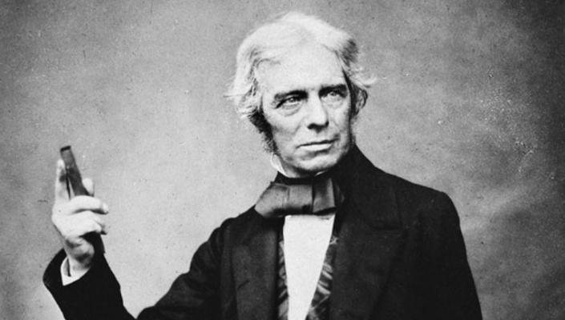
Michael Faraday · 1791‑1867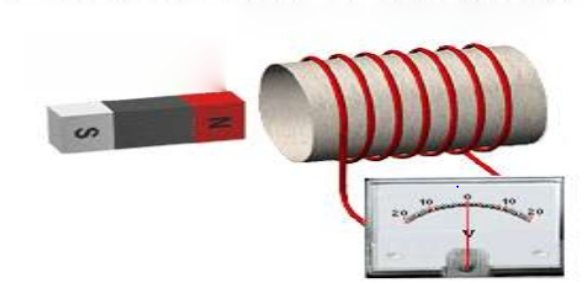
Champ magnétique (TMS) Courant neuronal induit« Une variation de courant dans un circuit magnétique peut entraîner l’apparition d’une tension dans un autre circuit magnétique »
Principe théorique
1 → Un courant alternatif généré dans une bobine 1 produit un champ magnétique orthogonal au plan de la bobine.
2 → Ce champ magnétique génère à son tour un courant électrique dans une bobine 2 située à proximité immédiate.
Un courant électrique peut générer un champ magnétique
Un champ magnétique peut générer un courant électrique
« Utiliser un champ magnétique pour stimuler électriquement une zone cérébrale localisée »
Mécanisme d’action
Une énergie électrique (du courant alternatif) est transformée en champ magnétique en passant à grande vitesse dans des bobines de cuivre.
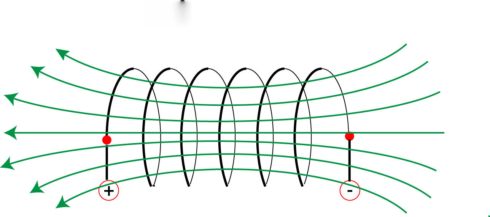
Champ B⃗Le champ magnétique ainsi créé est reconverti en courant électrique, à distance, lorsqu’il rencontre une surface.
Les précurseurs
1896
Jacques-Arsène d’Arsonval (Paris)
Galvanomètre, arsonvalisation (diathermie), électricité médicale
1902
A. Pollacsek et B. Beer (Vienne)
Application d’une bobine électromagnétique sur le crâne
1910
Silvanus P. Thompson (Londres)
Induction de phosphènes et de vertiges
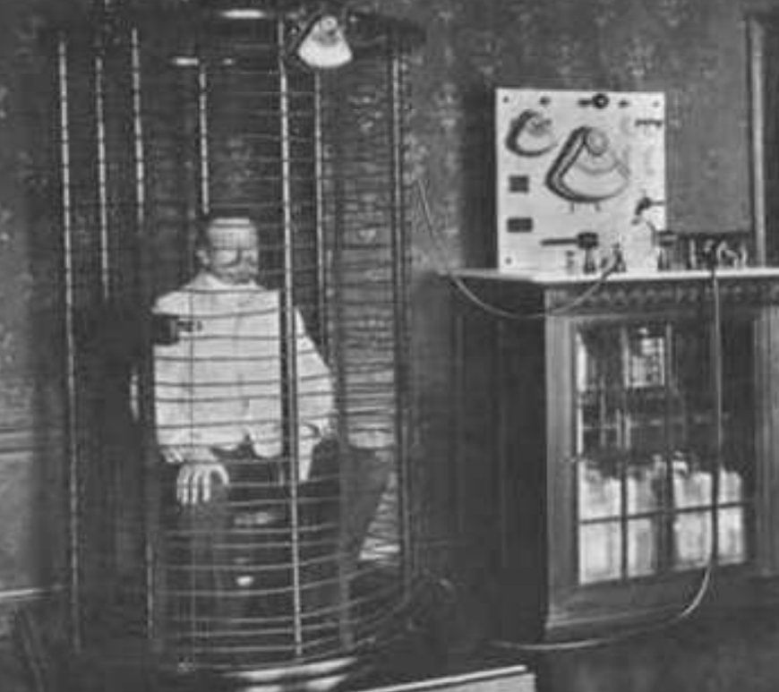
d’Arsonval · 1896Les précurseurs
1896
Jacques-Arsène d’Arsonval (Paris)
Galvanomètre, arsonvalisation (diathermie), électricité médicale
1902
A. Pollacsek et B. Beer (Vienne)
Application d’une bobine électromagnétique sur le crâne
1910
Silvanus P. Thompson (Londres)
Induction de phosphènes et de vertiges
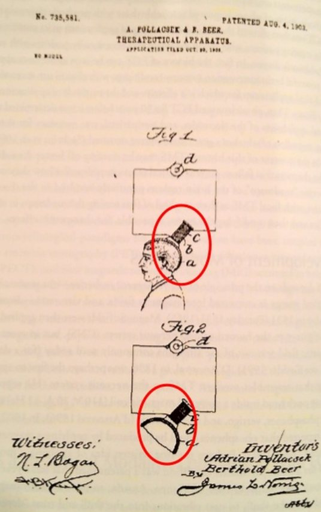
Document d’archive · brevet « Therapeutical apparatus », Pollacsek & Beer
Les précurseurs
1896
Jacques-Arsène d’Arsonval (Paris)
Galvanomètre, arsonvalisation (diathermie), électricité médicale
1902
A. Pollacsek et B. Beer (Vienne)
Application d’une bobine électromagnétique sur le crâne
1910
Silvanus P. Thompson (Londres)
Induction de phosphènes et de vertiges
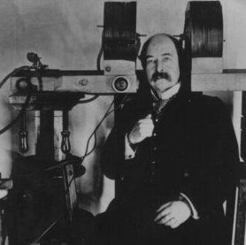
42 HzMagnétophosphènes
probablement par stimulation rétinienne plutôt que par stimulation du cortex visuel
Les précurseurs
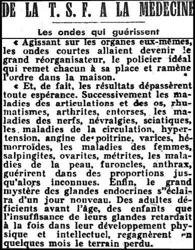
« De la T.S.F. à la médecine. Les ondes qui guérissent » (document d’archive)
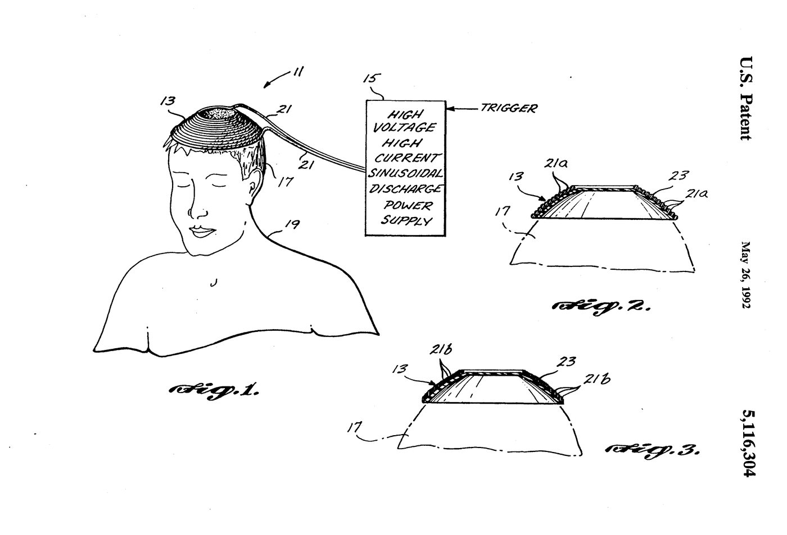
Planche de brevet américain (U.S. Patent), document d’archive
1910 → 1985
En psychiatrie, développement d’autres alternatives thérapeutiques :
Psychanalyse
ECT
Pharmacologie
TCC
The Therapeutic Trifecta of Psychiatry
« Shrinking · Shocking · Drugging »
Psychothérapie · électrochocs · médicaments
= La stimulation de type TMS se fait oublier
1985 : un tournant ?
1er stimulateur : démonstration qu’il est possible d’exciter électriquement une structure cérébrale à l’aide de champs magnétiques
Conduction des potentiels d’action du cortex moteur à la moelle épinière = mapping cérébral
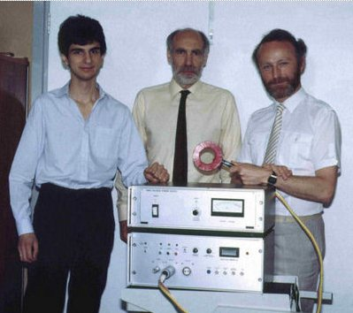
Le groupe de Sheffield avec le stimulateur qui a réalisé la première stimulation magnétique transcrânienne, février 1985. De gauche à droite : Reza Jalinous, Ian Freeston et Tony Barker.
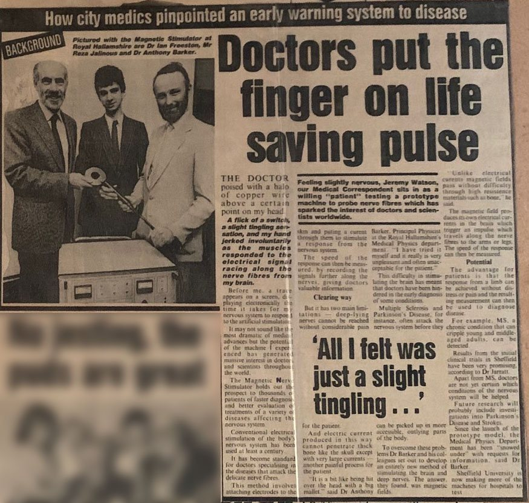
1985 : un tournant
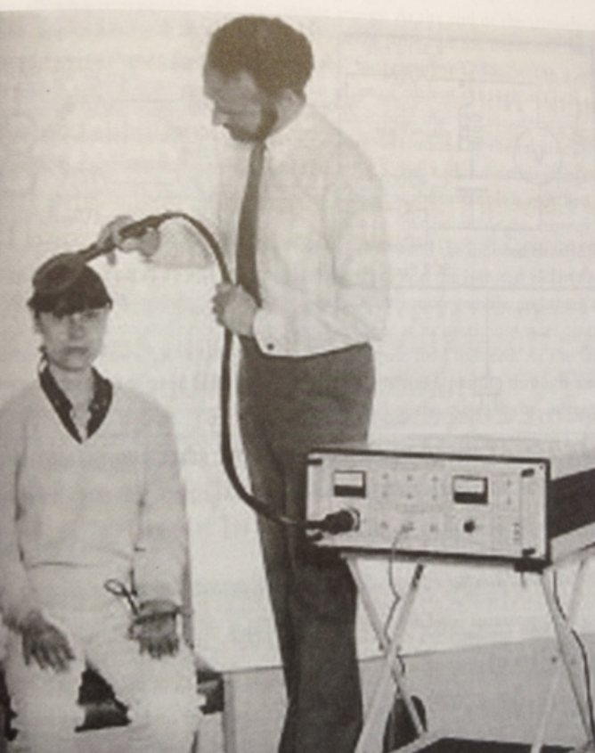
PRESSE · 1985
« Doctors put the finger on life saving pulse »
« Les médecins mettent le doigt sur une impulsion qui sauve des vies »
Extrait de l’article : « All I felt was just a slight tingling », je n’ai ressenti qu’un léger picotement.
1985 : un tournant ?
1er stimulateur : démonstration qu’il est possible d’exciter électriquement une structure cérébrale à l’aide de champs magnétiques
Conduction des potentiels d’action du cortex moteur à la moelle épinière = mapping cérébral
C’est ce principe qui a aidé à dresser la carte des aires motrices du cerveau.
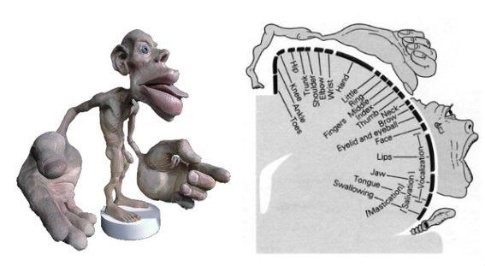
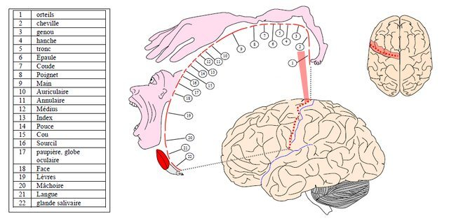
1985 : un tournant ?
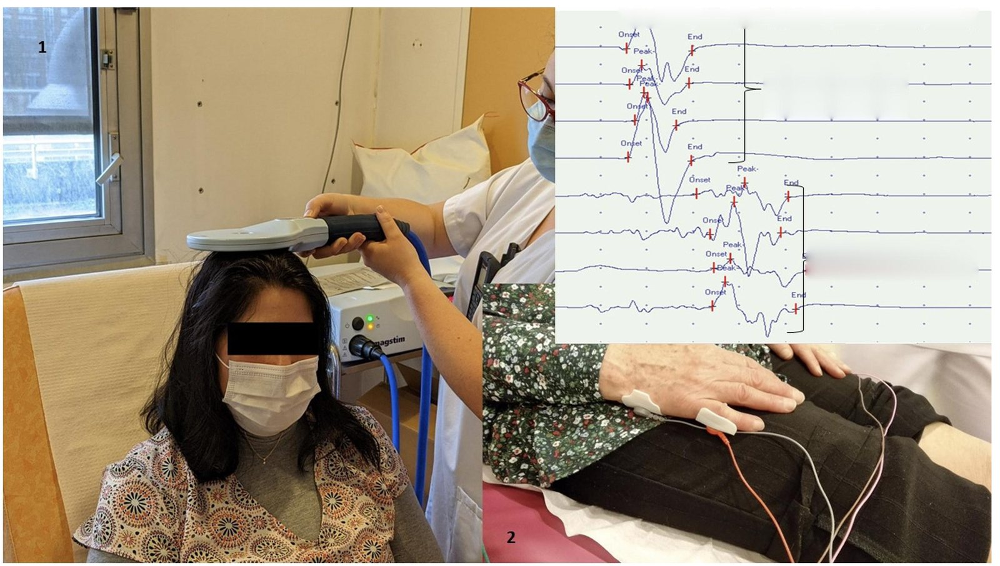
Réponses des muscles de la main (voir photo 2) Stimulation du cou (racines nerveuses cervicales) Stimulation du cortex cérébral (voir photo 1)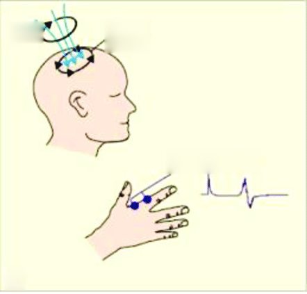
Bobine Champ électrique Réponse motrice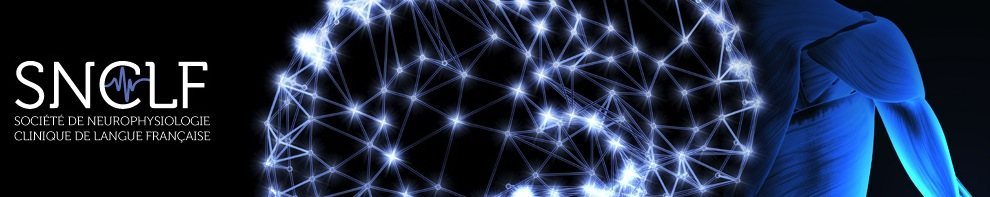
Constat
1987
Bickford constate une élévation de l’humeur chez des sujets sains après stimulation par TMS
1993
1re étude (Höflich)
Pulse unique · 3 sites · 2 patients
1995
2e étude (Kolbinger)
0,25 à 0,5 Hz · 15 patients
1995
3e étude (George)
20 Hz à 80 % du seuil moteur · 6 patients
1996 : le 1er essai contrôlé randomisé
1er RCT, publié dans The Lancet, par Pascual-Leone
17 patients atteints de dépression résistante
Contrôlé contre placebo (sham)
64%
amélioration significative
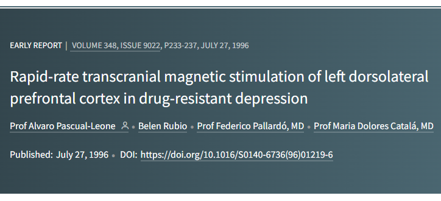
Pascual-Leone A, Rubio B, Pallardó F, Catalá MD. Rapid-rate transcranial magnetic stimulation of left dorsolateral prefrontal cortex in drug-resistant depression. Lancet 1996;348:233‑237.
Depuis 1996 : plus de 1000 RCT
PUBMED · RCT_rTMS · 1991‑2022
1 020 résultats
Les machines, 2008 → 2016
Neuronetics NeuroStar
Nexstim eXimia NBS System
Nexstim NBS System 4 avec NexSpeech
BrainsWay Deep TMS
eNeura Cerena
eNeura SpringTMS
Magstim Rapid²
Tonica Elektronik (MagVenture) MagVita
TeleEMG (Neurosoft) Neurosoft TMS
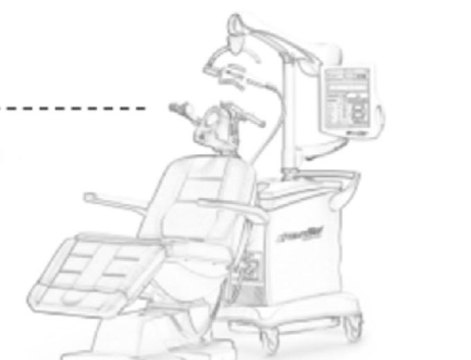
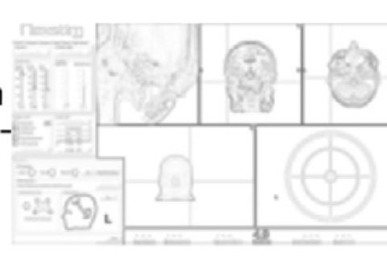
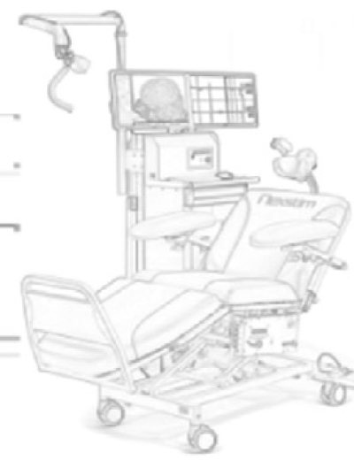
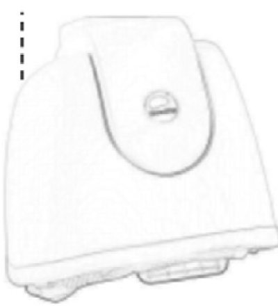
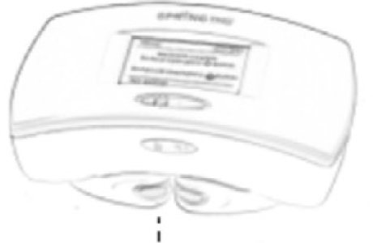
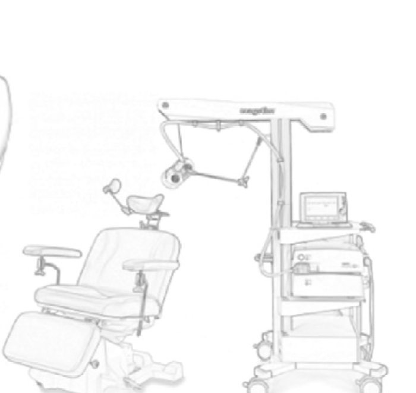
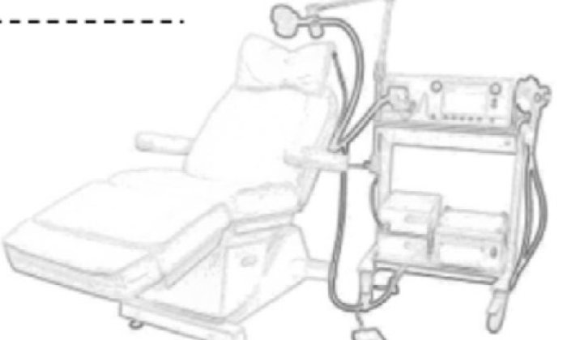
Les machines, 2017 → 2021
Nexstim NBT System, positionnement de la bobine guidé par IRM
BrainsWay Deep TMS dans le TOC
eNeura SpringTMS en traitement préventif
MAG & More Apollo TMS System
Tonica Elektronik (MagVenture) MagVita TMS avec Theta Burst (iTBS)
Axilum Robotics TMS Cobot TS MV, positionnement robotisé de la bobine
Nexstim NBT 2 avec iTBS
Magstim Horizon TMS avec neuronavigation, iTBS
eNeura SpringTMS en traitement aigu et préventif chez l’adolescent
Neuronetics NeuroStar Advanced avec NeuroBurst (iTBS)
Tonica Elektronik (MagVenture) MagVenture TMS
Soterix Medical Neural Navigator, positionnement guidé par IRM
BrainsWay Deep TMS
Soterix Medical Neural Navigator avec CloudTMS
BrainsWay Deep TMS
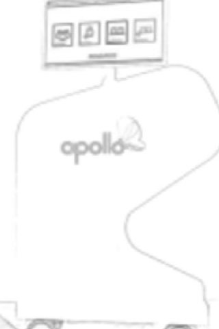
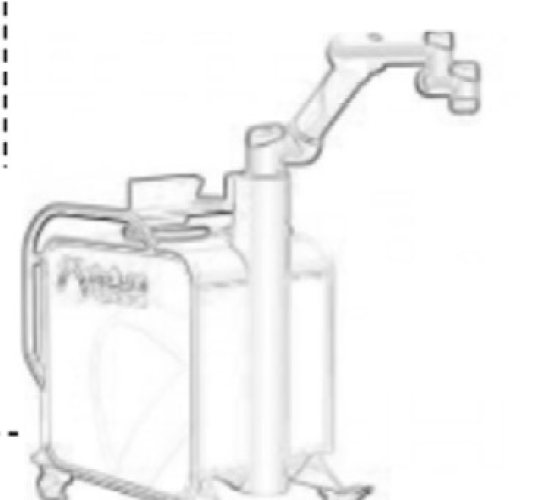
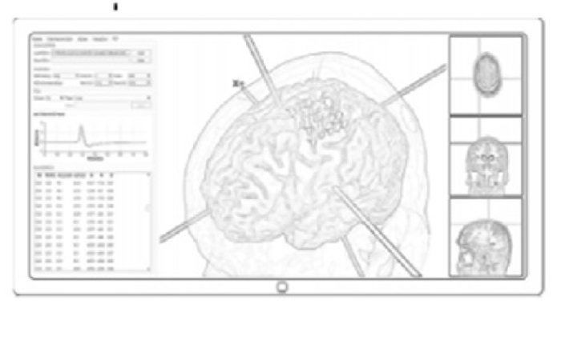
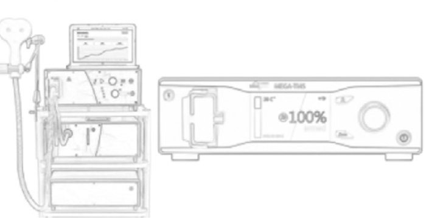
Chronologie
1996 → 2022
200+ méta-analyses
Des recommandations officielles :
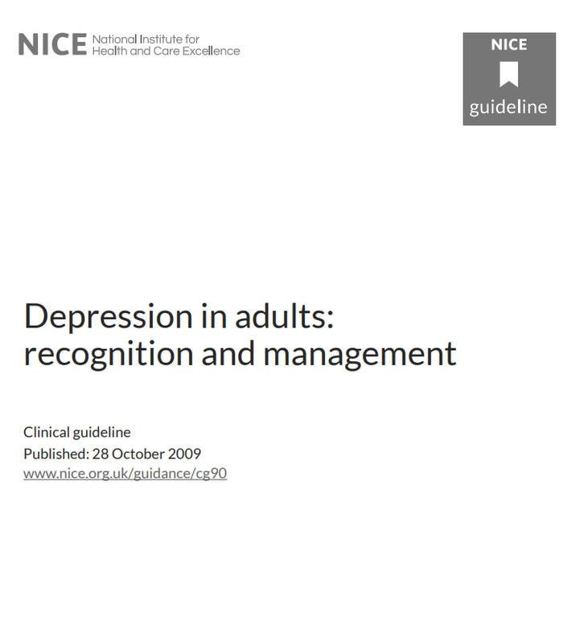
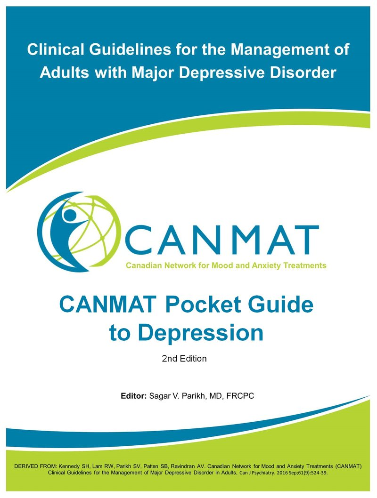
En France
40
centres en 2017
~100
probablement une centaine en 2022
Essentiellement des CHU
4 centres anti-douleur
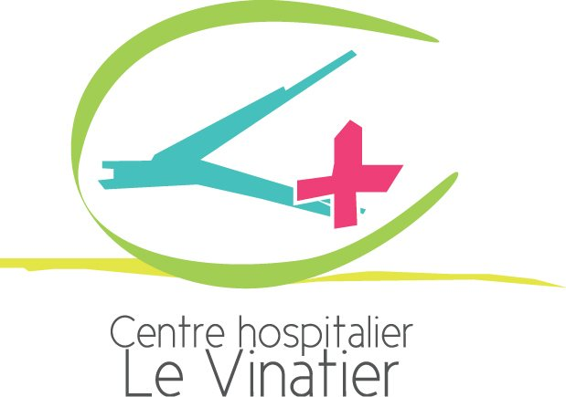
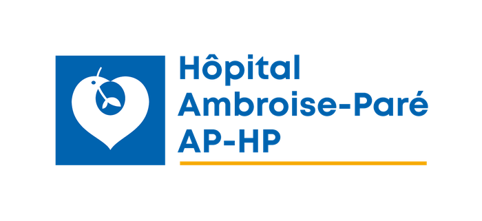
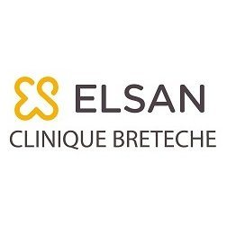
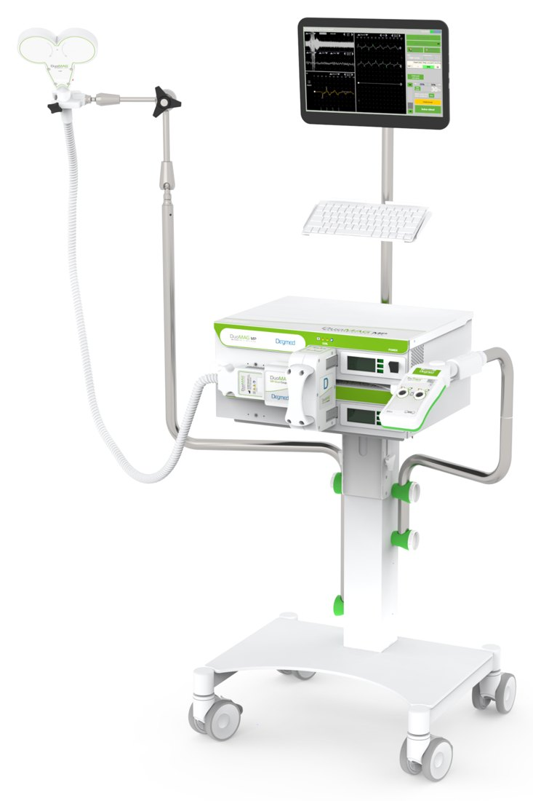
Bobine de stimulation
onde magnétique exprimée en tesla
Bras Fisso
Écran de contrôle
Stimulateur
puissance exprimée en joules
Module EMG
Mécanisme d’action
Selon la forme de la bobine utilisée, le champ se dirige perpendiculairement, de façon plus ou moins focale.
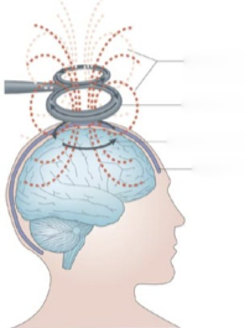
Champ magnétique Bobine de TMS Courant électrique CrâneBobine ronde ou bobine en 8
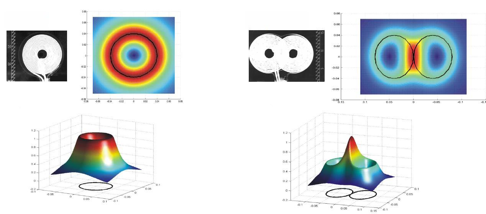
RONDE EN 8Champ en forme de « cuvette »
Plutôt peu focal
Le champ culmine sous l’intersection des deux boucles
Bobines
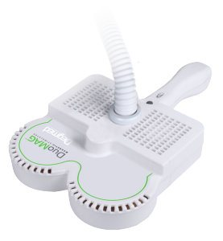
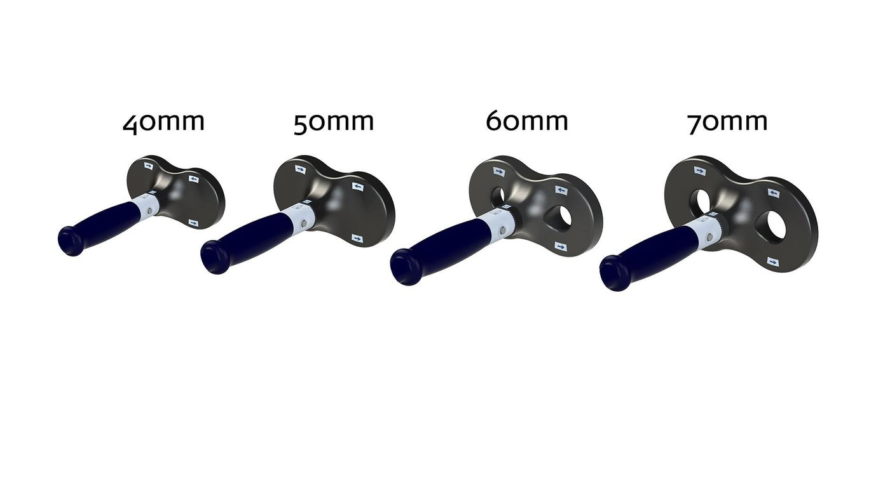
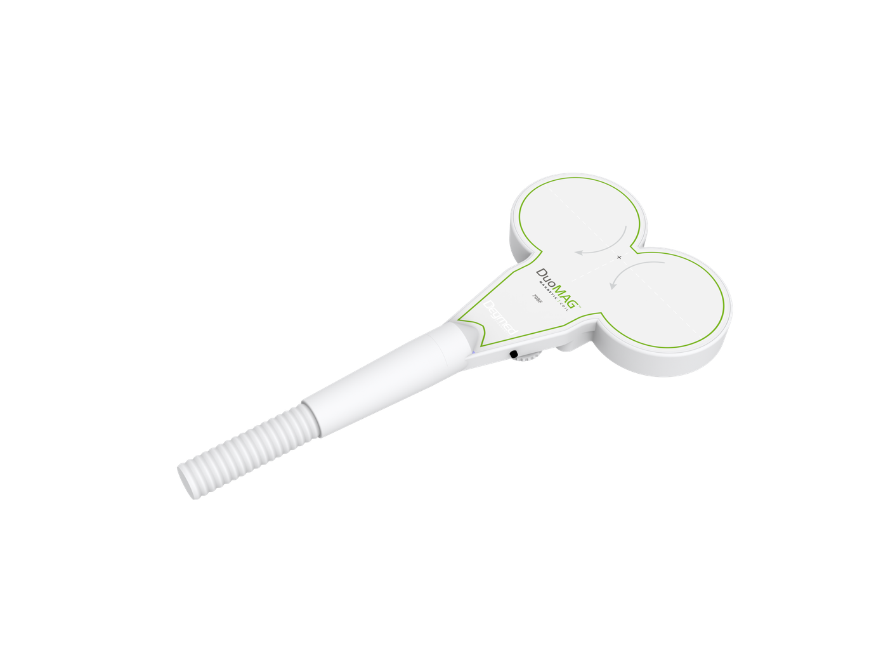
Bobines
PROFIL_DE_CHAMP
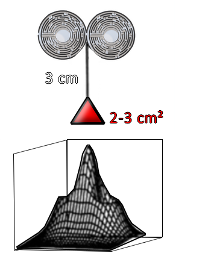
Bobines
PROFIL_DE_CHAMP
Utilisation périphérique
Bobines
Bobines
Bobines
Mécanisme d’action
PROFONDEUR
2-3 cm
SURFACE_STIMULÉE
2-3 cm²